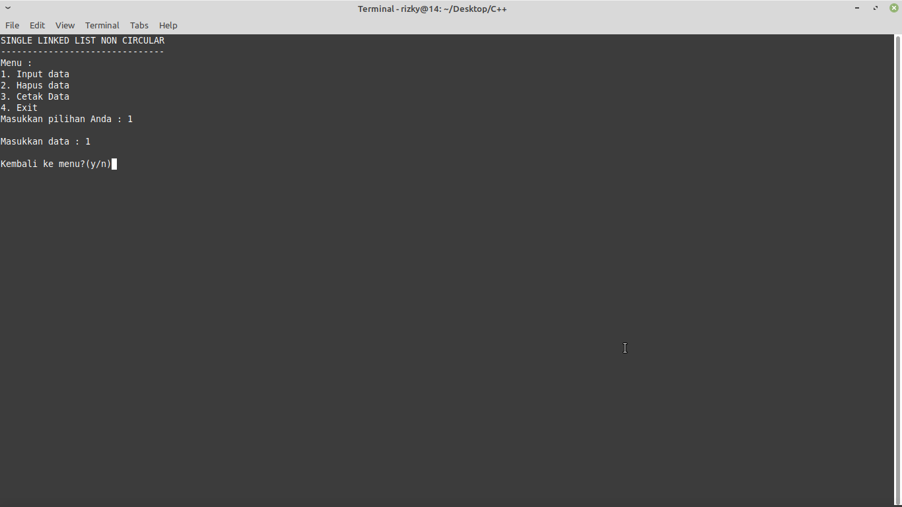
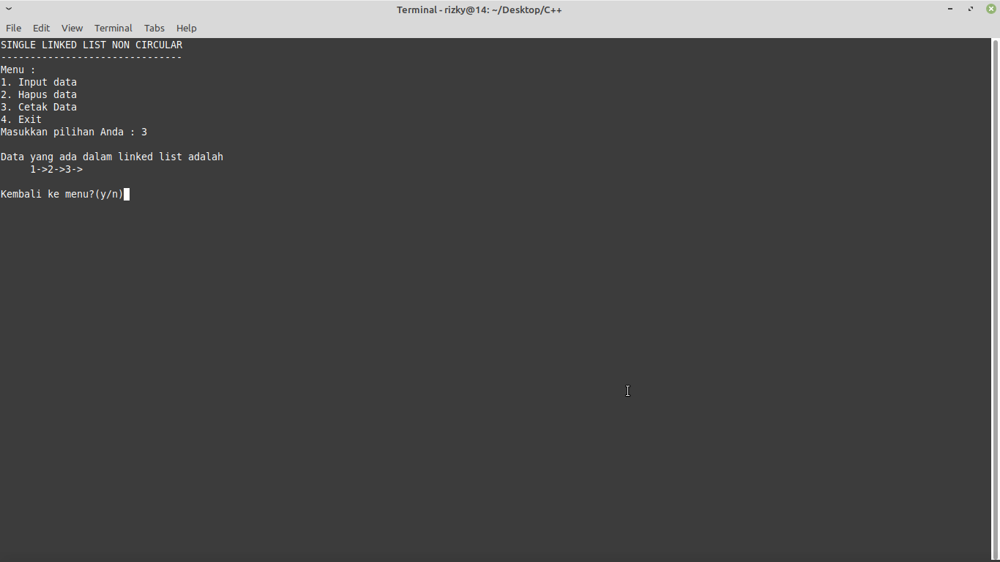
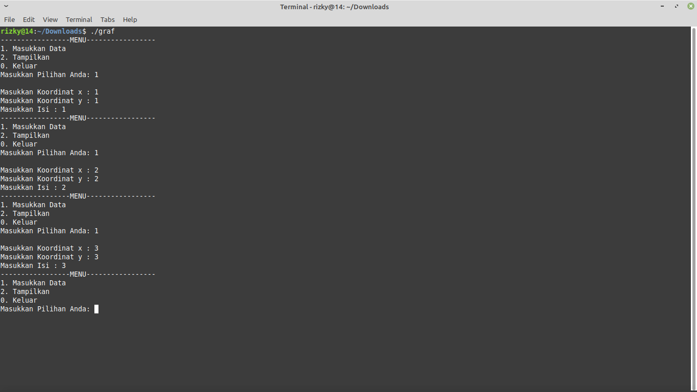
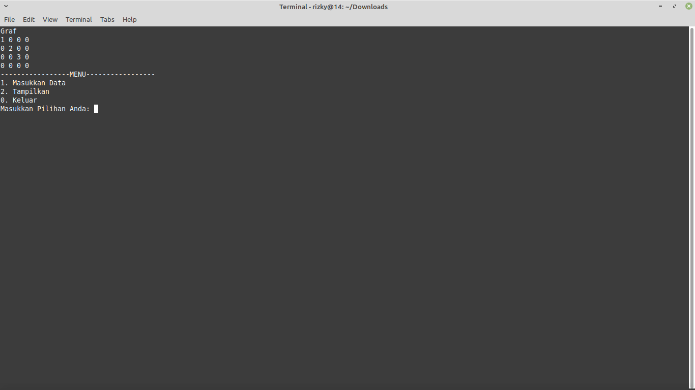

TUGAS ALGORITMA DAN STRUKTUR DATA
| Nama | : Rizky Adi Ryanto |
| Nim | : 19.01.103.044 |
| Kelas | : Teknik Informatika B |
SOAL
- Uraikan yang anda ketahui mengenai pemograman struktur data majemuk linier : linked list !
- Berikan satu contoh pemograman Struktur Data Majemuk Linier : Linked List !
- Uraikan yang anda ketahui mengenai pemograman struktur data Majemuk Non Linier : Tree Binary !
- Berikan satu contoh Pemrograman Struktur Data Majemuk Non Linier : Tree Binary!
- Uraikan yang anda ketahui mengenai Pemrograman Struktur Data Majemuk Non Linier : Graph !
- Berikan satu contoh pemograman struktur data Majemuk Non Linier : Graph !
Linked List menurut saya bahasa sederhananya yaitu sebagai media penyimpanan data dengan kapasitas yang banyak.Berbeda dengan array,Linked List memiliki pointer untuk menghubungkan data yang satu dengan yang lain.
Memang ini akan terlihat canggih dikarenakan kita akan lebih mudah untuk mengakses datanya,tetapi menurut saya itu akan memakan lebih banyak memori sehingga akan menjadi tidak efisien,koreksi jika salah.Linked List terbagi menjadi 2 yaitu single linked list dan double linked list.
Di bawah ini adalah contoh kodingan linked list,maksud dari non-circular adalah bahwa pointernya hanya satu dan menunjuk ke satu arah,atau bisa di sebut single lingked list.saya menggunakan text editor Sublime-text3 dengan compiler g++,dan untu outputnya saya tampilkan dalam bentuk screenshot terminal dikarenkan saya menggunakan OS Linux lebih tepatnya Distro Linux Mint versi Desktop xfce,karena saya cuman punya laptop jadul bu wkwkwk.
Outpunya seperti ini

dan untuk data dalam program itu di masukan dengan cara satu persatu tidak
dimasukan secara otomatis seperti menggunakan array

tampilan data

sama seperti array,stack maupun queue,tree binary juga merupakan salah satu elemen dalam pembuatan struktur data.bisa di ibaratkan dengan akar di suatu pohon. Jadi, tipe ini bisa dimaknai sebagai kumpulan node dan masing-masing node tersebut tersusun dari value dan juga berbagai referensi lainnya. Nah, Tree yang terdiri atas maksimal 2 anak akan disebut sebagai Binary Tree.
Jika di lihat di dalam di berbagai refrensi di dalam internet, Binary Tree mempunyai dua sub Tree yang terletak di bagian kiri serta kanan. Ciri-cirinya adalah bagian kiri mempunyai nilai root yang lebih kecil dibandingkan dengan bagian yang kanan.
Untuk mengakses data dalam Tree ini ada 3 cara yang bisa Anda lakukan, yaitu postorder, pre-order dan inorder.
Untuk codingan tree binary di bawah ini menggunakan class dengan nama BinarySearchTree,dan untuk kalimat private merupakan salah satu atribut penentu akses yang ada di class.Public,Private,dan Protected.Penjelasan lebih lanjut bisa langsung klik w3school
Graph adalah sekumpulan noktah (simpul/vertex) di dalam bidang dua dimensi yang dihubungkan dengan sekumpulan garis (sisi/edge). Graph dapat digunakan untuk merepresentasikan objek-objek diskrit dan hubungan antara objek-objek tersebut. Sedangkan Pohon (tree) adalah graph yang khusus. Pohon dapat didefinisikan sebagai graph-tak-berarah terhubung yang tidak mengandung sirkuit (cycle).
Perbedaan antara graph dengan tree yaitu pada graph, mampu terjadi cycle, artinya dari suatu titik yang terhubung oleh edge dapat kembali lagi ke vertextersebut. Sedangkan tree, merupakan suatu graf yang alur edge nya tidak dapat kembali lagi ke vertex awalnya.
Oututnya :

